1 Ανισώσεις \(2^{ου}\) βαθμού
1.1 Μορφές τριωνύμου
1. Θεωρία και Ορισμοί
Ορισμός Τριωνύμου: Κάθε παράσταση της μορφής \(αx^2 + \beta x + \gamma\), με \(α \neq 0\), ονομάζεται τριώνυμο 2ου βαθμού ή απλά τριώνυμο.
Οι αριθμοί \(α, \beta, \gamma\) είναι οι συντελεστές του, ενώ η ποσότητα \(\Delta = \beta^2 - 4α\gamma\) ονομάζεται διακρίνουσα.
Ρίζες Τριωνύμου: Οι τιμές του \(x\) που μηδενίζουν το τριώνυμο (\(αx^2 + \beta x + \gamma = 0\)) ονομάζονται ρίζες του.
Επίλυση Ανίσωσης: Για να λύσουμε μια ανίσωση της μορφής \(αx^2 + \beta x + \gamma > 0\) (ή \(<, \ge, \le\)), μελετάμε το πρόσημο του τριωνύμου. Το πρόσημο εξαρτάται από τη διακρίνουσα \(\Delta\) και τον συντελεστή \(α\):
Όταν \(\Delta > 0\): Το τριώνυμο έχει δύο άνισες πραγματικές ρίζες, \(x_1\) και \(x_2\). Το τριώνυμο είναι:
- Ετερόσημο του \(α\) (αντίθετο πρόσημο) για τις τιμές του \(x\) που βρίσκονται ανάμεσα στις ρίζες (\(x_1 < x < x_2\)).
- Ομόσημο του \(α\) (ίδιο πρόσημο) για τις τιμές του \(x\) που βρίσκονται έξω από τις ρίζες (\(x < x_1\) ή \(x > x_2\)).
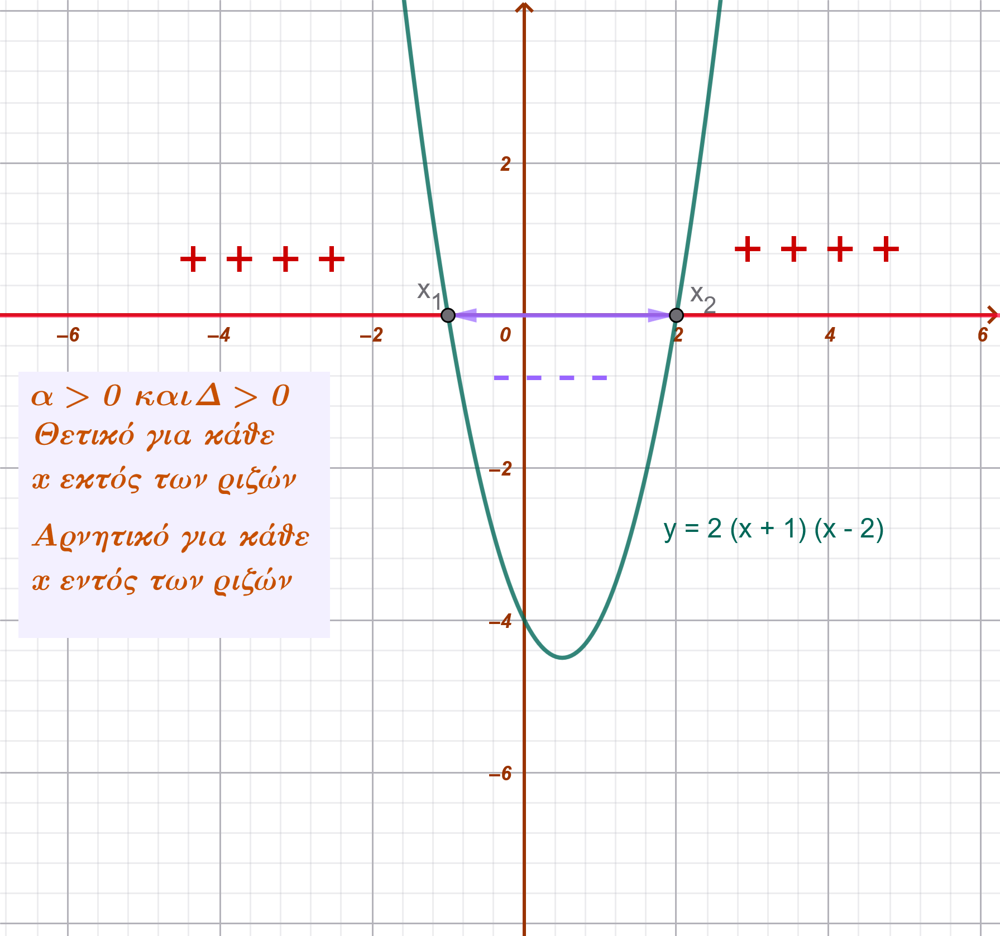
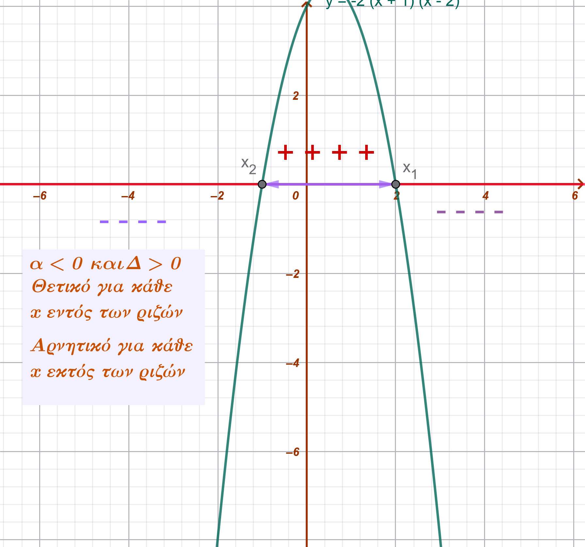
Όταν \(\Delta = 0\): Το τριώνυμο έχει μία διπλή ρίζα \(x_0 = -\frac{\beta}{2α}\). Το τριώνυμο είναι ομόσημο του \(α\) για κάθε \(x \neq x_0\), ενώ για \(x = x_0\) μηδενίζεται.
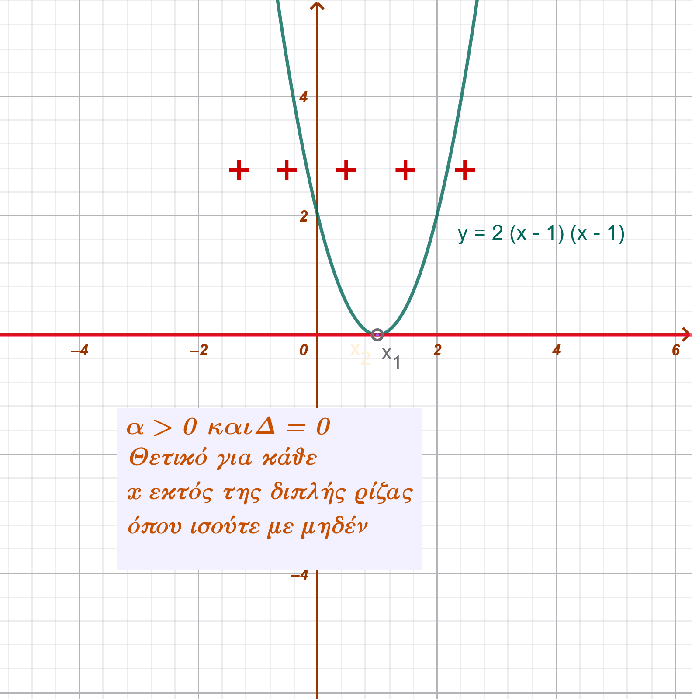
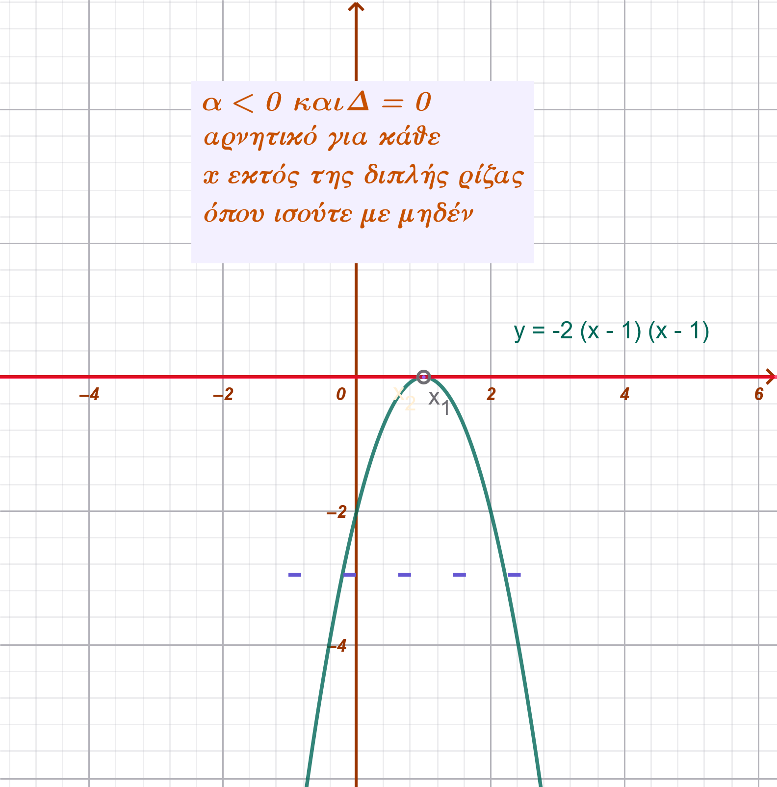
Όταν \(\Delta < 0\): Το τριώνυμο δεν έχει πραγματικές ρίζες και είναι ομόσημο του \(α\) για κάθε πραγματικό αριθμό \(x\).
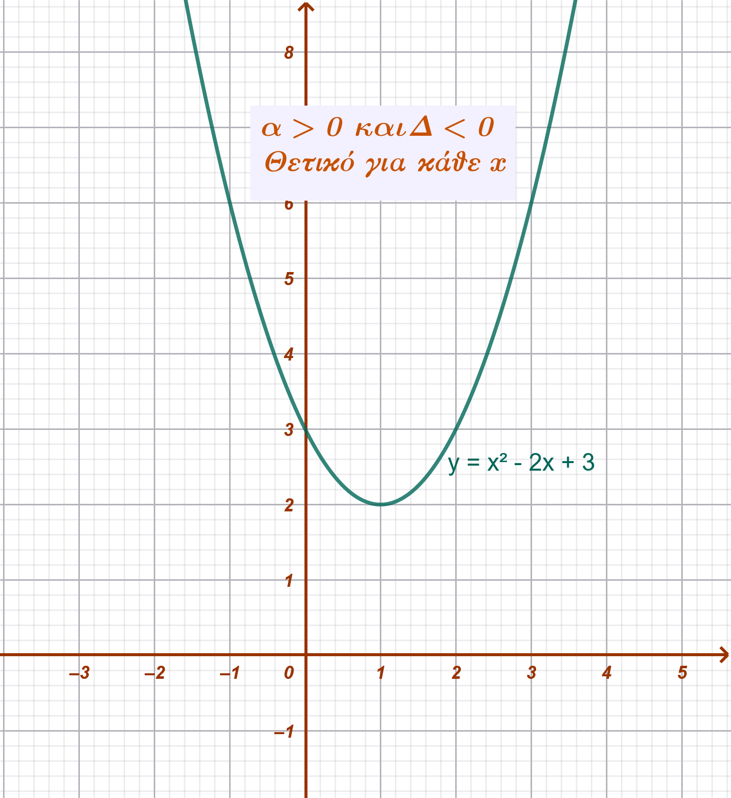
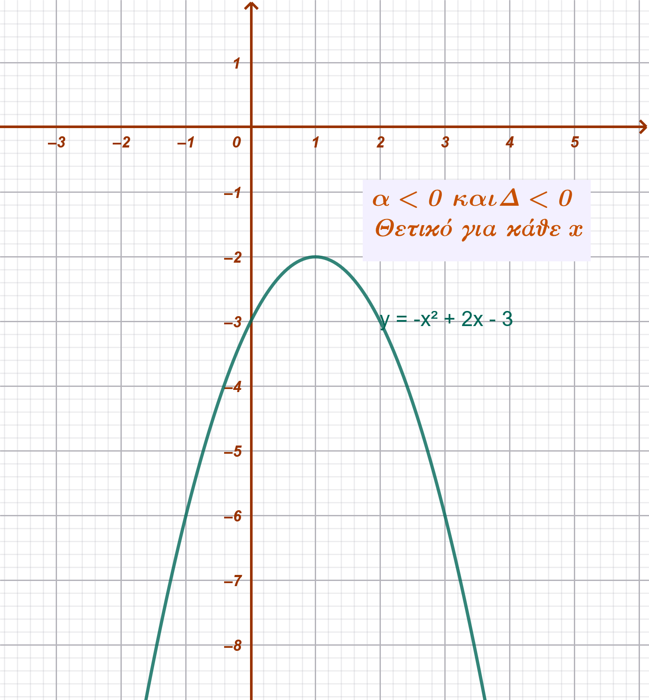
1.1.1 Παραδείγματα διαφόρων περιπτώσεων
Περίπτωση \(\Delta > 0\):
Να λυθεί η ανίσωση \(-x^2 + 5x - 6 \ge 0\).
- Βρίσκουμε τις ρίζες της εξίσωσης \(-x^2 + 5x - 6 = 0\): \(\Delta = 1 > 0\), οπότε \(x_1 = 2\) και \(x_2 = 3\).
- Επειδή \(α = -1 < 0\), το τριώνυμο είναι θετικό (ετερόσημο του \(α\)) ανάμεσα στις ρίζες.
- Λύση: \(2 \le x \le 3\) ή \(x \in [2,3]\).
Περίπτωση \(\Delta = 0\):
Να λυθεί η ανίσωση \(4x^2 + 4x + 1 > 0\).
- \(\Delta = 16 - 16 = 0\), οπότε υπάρχει διπλή ρίζα \(x_0 = -\dfrac{1}{2}\).
- Επειδή \(α = 4 > 0\), το τριώνυμο είναι θετικό για κάθε \(x \neq -\dfrac{1}{2}\).
- Λύση: \(x \in (-\infty, -\dfrac{1}{2}) \cup (-\dfrac{1}{2}, +\infty)\).
Περίπτωση \(\Delta < 0\):
Να λυθεί η ανίσωση \(x^2 + x + 3 > 0\).
- \(\Delta = 1 - 12 = -11 < 0\). Το τριώνυμο δεν έχει ρίζες.
- Επειδή \(α = 1 > 0\), το τριώνυμο είναι θετικό για κάθε \(x \in \mathbb{R}\).
- Λύση: Όλο το \(\mathbb{R}\).
…. να θυμάσαι: Για κάθε άσκηση, υπολογίστε τη διακρίνουσα \(\Delta\), βρείτε τις ρίζες (αν υπάρχουν) και εξετάστε το πρόσημο του \(α\) για να προσδιορίσετε το σωστό διάστημα λύσεων.
1.2 Κατασκευή πίνακα προσήμων και γεωμετρική απεικόνιση
Κατασκευή Πίνακα Προσήμων
Να λυθεί η ανίσωση: \(x^2 - 5x + 6 > 0\).
Εύρεση Ριζών: Η εξίσωση \(x^2 - 5x + 6 = 0\) έχει \(\Delta = 1 > 0\) και ρίζες τις \(x_1 = 2\) και \(x_2 = 3\).
Πίνακας Προσήμων: Επειδή \(α = 1 > 0\), το τριώνυμο είναι ϑετικό (+) εκτός των ριζών και αρνητικό (-) ανάμεσα.
| x | \(- \infty \) \(\qquad\) \(\qquad\) \(\qquad\) \(2\) \(\qquad\) \(\qquad\) \(\qquad\) \(3\) \(\qquad\) \(\qquad\) \(\qquad\) \(+ \infty\) |
|---|---|
| \(y=x^2-5x+6\) | \(\qquad\) \(\qquad\) ++++\(\qquad\) 0 \(\qquad\) -------- \(\qquad\) 0 \(\qquad\) ++++++ \(\qquad\) |
- Λύση: \(x < 2\) ή \(x > 3\).
Γεωμετρική Απεικόνιση (Γραφική Μέθοδος)
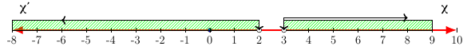
1.3 Συναλήθευση ανισοτήτων \(2^{ου}\) βαθμού
Η συναλήθευση δύο ή περισσότερων ανισώσεων 2ου βαθμού είναι η διαδικασία κατά την οποία αναζητούμε τις κοινές λύσεις τους, δηλαδή τις τιμές της μεταβλητής \(x\) που επαληθεύουν όλες τις ανισώσεις ταυτόχρονα.
Μεθοδολογία Επίλυσης
Για να βρούμε το σύνολο των κοινών λύσεων, ακολουθούμε τα εξής βήματα:
Λύνουμε κάθε ανίσωση χωριστά, βρίσκοντας τα διαστήματα λύσεών τους.
Παριστάνουμε τις λύσεις των ανισώσεων πάνω στον ίδιο άξονα των πραγματικών αριθμών.
Προσδιορίζουμε το διάστημα (ή τα διαστήματα) όπου οι λύσεις συμπίπτουν (τομή των συνόλων λύσης).
Παράδειγμα Συναλήθευσης
Έστω το σύστημα των ανισώσεων:
\(x^2 - 14x + 45 > 0\)
\(x^2 - 13x + 30 < 0\)
Βήμα 1: Επίλυση της πρώτης ανίσωσης (\(x^2 - 14x + 45 > 0\))
- Βρίσκουμε τις ρίζες του τριωνύμου \(x^2 - 14x + 45 = 0\). Η διακρίνουσα είναι \(\Delta = 196 - 180 = 16\), άρα οι ρίζες είναι \(x_1 = 5\) και \(x_2 = 9\).
- Επειδή \(α = 1 > 0\) και ζητάμε το τριώνυμο να είναι θετικό, οι λύσεις βρίσκονται έξω από τις ρίζες: \(x < 5\) ή \(x > 9\).
Βήμα 2: Επίλυση της δεύτερης ανίσωσης (\(x^2 - 13x + 30 < 0\))
- Βρίσκουμε τις ρίζες του τριωνύμου \(x^2 - 13x + 30 = 0\). Η διακρίνουσα είναι \(\Delta = 169 - 120 = 49\), άρα οι ρίζες είναι \(x_1 = 3\) και \(x_2 = 10\).
- Επειδή \(α = 1 > 0\) και ζητάμε το τριώνυμο να είναι αρνητικό, οι λύσεις βρίσκονται ανάμεσα στις ρίζες: \(3 < x < 10\).
Βήμα 3: Εύρεση κοινών λύσεων στον άξονα Τοποθετούμε τα αποτελέσματα στον άξονα:
Λύσεις (1): \((-\infty, 5) \cup (9, +\infty)\)
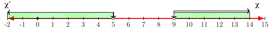
Λύσεις (2): \((3, 10)\)
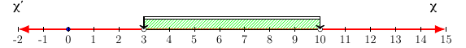
Η τομή των δύο συνόλων (εκεί που συνυπάρχουν οι γραμμές των λύσεων) είναι: \(3 < x < 5\) ή \(9 < x < 10\).
Σύνολο Λύσεων: \(x \in (3, 5) \cup (9, 10)\).
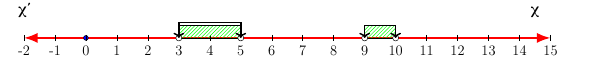
Με πίνακα
| x | \(- \infty \) \(\qquad\) \(3\) \(\qquad\) \(\qquad\) \(5\) \(\qquad\)\(\qquad\) \(\qquad\) \(9\) \(\qquad\) \(10\) \(\qquad\) \(+ \infty\) |
|---|---|
| \(y=x^2-14x+45>0\) | ++++++++ +++++ +++++ 0 ------ ------ -------- 0 ++++++++++++ |
| \(y=x^2-13x+30<0\) | ++++++++ 0 ----------- -------------- ------ ------------------ 0 +++++++++++++ |
| Συναλήθευση | \(\qquad\) \(\qquad\) \(1^η +\) και \( 2^η -\) \(\qquad\) \(\qquad\)\(\qquad\) \(1^η +\) και \(2^η -\) \(\qquad\)\(\qquad\) |
….Και γραφικά
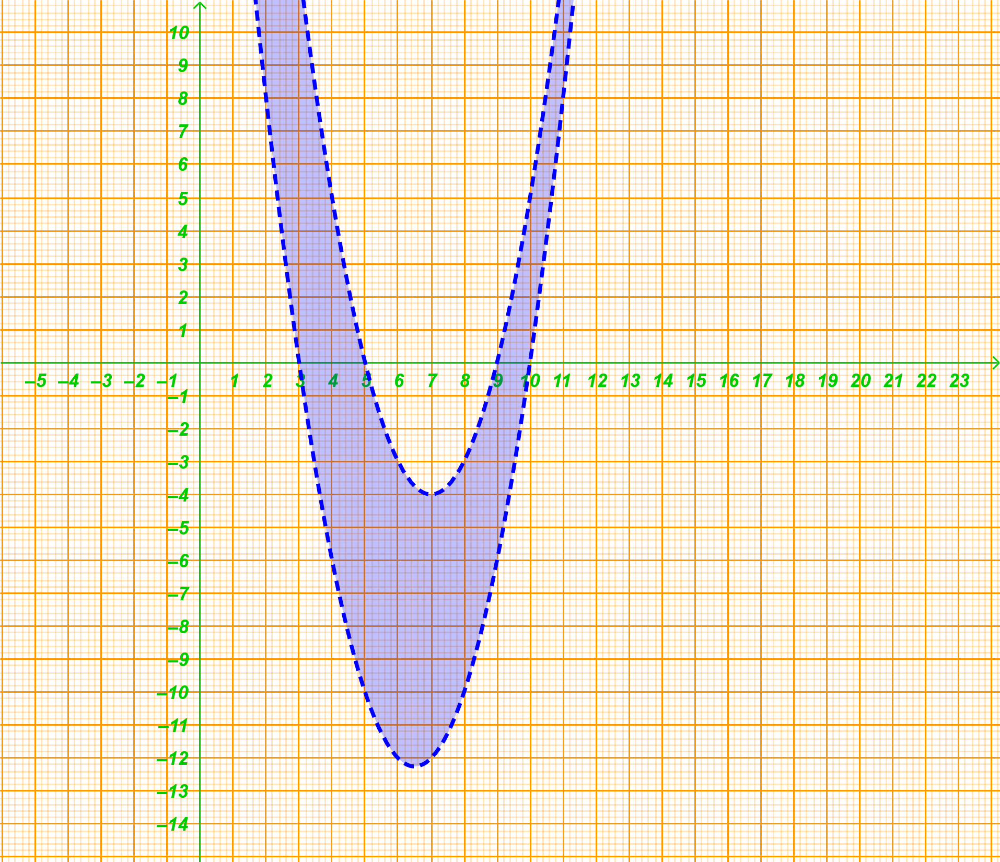
Δεύτερο Παράδειγμα (Συνοπτικά)
Να λυθεί το σύστημα:
\(3x^2 - x - 2 < 0\)
\(-2x^2 + x > 0\)
Λύση:
- Για την (1): Οι ρίζες είναι \(1\) και \(-\dfrac{2}{3}\). Το τριώνυμο είναι αρνητικό ανάμεσα στις ρίζες, άρα: \(x \in (-\dfrac{2}{3}, 1)\).
- Για την (2): Οι ρίζες είναι \(0\) και \(\dfrac{1}{2}\). Επειδή \(α = -2 < 0\), το τριώνυμο είναι θετικό ανάμεσα στις ρίζες, άρα: \(x \in (0, \dfrac{1}{2})\).
- Συναλήθευση: Οι κοινές λύσεις των δύο διαστημάτων είναι το διάστημα \((0, \dfrac{1}{2})\).
1.4 Ασκήσεις
- Να λύσετε τις ανισώσεις
- \(x^2 - 2x - 3 > 0\)
- \(x^2 - 7x + 6 < 0\)
- \(x^2 - 6x + 9 > 0\)
- \(x^2 - 2x + 1 \le 0\)
- \(4x^2 - 20x + 25 < 0\)
- \(-2x^2 + 3x - 1 < 0\)
- \(-x^2 - x - 2 > 0\)
- \(2x^2 - 3x + 1 < 0\)
- \(x^2 + 4x + 5 \le 0\)
- \(x^2 - 10x + 21 < 0\)
- Να μετατρέψετε σε γινόμενα παραγόντων τα τριώνυμα:
- α. \(x^2 - 5x + 6\)
- β. \(3x^2 + 5x - 2\)
- Να απλοποιήσετε τις παραστάσεις:
- α. \(\dfrac{x^2 - 4x + 3}{x^2 - 1}\)
- β. \(\dfrac{3x^2 + 6x - 24}{x^2 - 16}\)
- γ. \(\dfrac{9x^2 - 6x + 1}{3x^2 - 4x + 1}\)
- Για τις διάφορες τιμές του \(x \in \mathbb{R}\), να βρείτε το πρόσημο των τριωνύμων:
- α. \(x^2 - 6x + 8\)
- β. \(9x^2 - 6x + 1\)
- γ. \(x^2 - 2x + 5\)
- Για τις διάφορες τιμές του \(x \in \mathbb{R}\), να βρείτε το πρόσημο των τριωνύμων:
- α. \(-x^2 + 5x - 6\)
- β. \(-4x^2 + 12x - 9\)
- γ. \(-x^2 + x - 1\)
- Να λύσετε τις ανισώσεις:
- α. \(3x^2 \le 12x\)
- β. \(x^2 - 2x \le 3\)
- Να λύσετε τις ανισώσεις:
- α. \(x^2 - 4x + 3 > 0\)
- β. \(3x^2 - 7x + 2 < 0\)
- Να λύσετε τις ανισώσεις:
- α. \(x^2 + 16 > 8x\)
- β. \(x^2 + 4 \le 4x\)
- Να λύσετε τις ανισώσεις:
- α. \(x^2 + 2x + 10 \le 0\)
- β. \(3x^2 - x + 5 > 0\)
Να λύσετε την ανίσωση: \(-\dfrac{1}{2}(x^2 - 6x + 8) > 0\).
Να βρείτε τις τιμές του \(x \in \mathbb{R}\) για τις οποίες ισχύει: \(x + 2 < x^2 < 2x + 8\).
Να βρείτε τις τιμές του \(x \in \mathbb{R}\) για τις οποίες συναληθεύουν οι ανισώσεις: \(x^2 - 7x + 10 < 0\) και \(x^2 - 8x + 7 > 0\).
Λύστε τις παραστάσεις \(x^2 + xy - 12y^2\) και \(x^2 - xy - 6y^2\) σαν εξισώσεις ως προς x και στη συνέχεια:
- α. Μετατρέψετε σε γινόμενα παραγόντων τις παραστάσεις: \(x^2 + xy - 12y^2\) και \(x^2 - xy - 6y^2\).
- β. Απλοποιήσετε την παράσταση: \(\dfrac{x^2 + xy - 12y^2}{x^2 - xy - 6y^2}\).
- Να παραγοντοποιήσετε το τριώνυμο: \(3x^2 + (3\beta - 2\alpha)x - 2\alpha\beta\).
βγάλτε την παρένθεση και μετά ομαδοποιήστε …..
Να απλοποιήσετε την παράσταση: \(\dfrac{x^2 - \beta x + 2\alpha x - 2\alpha\beta}{x^2 - 4\alpha x + 3\alpha^2}\).
Δίνεται η εξίσωση \(kx^2 + 4kx + k + 3 = 0, k \in \mathbb{R}, k \neq 0\). Να βρείτε τις τιμές του \(k\) για τις οποίες η εξίσωση:
- α. έχει ρίζες ίσες
- β. έχει ρίζες άνισες
- γ. είναι αδύνατη.
Να βρείτε τις τιμές του \(\mu \in \mathbb{R}\) για τις οποίες η ανίσωση \(x^2 + 4\mu x + 2\mu > 0\) αληθεύει για κάθε \(x \in \mathbb{R}\).
Δίνεται το τριώνυμο \((\mu - 1)x^2 - 4\mu x + 2\mu, \mu \neq 1\).
- α. Να βρείτε τη διακρίνουσα \(\Delta\) του τριωνύμου και να λύσετε την ανίσωση \(\Delta < 0\).
- β. Να βρείτε τις τιμές του \(\mu\) για τις οποίες η ανίσωση \((\mu - 1)x^2 - 4\mu x + 2\mu < 0\) αληθεύει για κάθε \(x \in \mathbb{R}\).
Σε τετράγωνο \(AB\Gamma\Delta\) πλευράς 4, το σημείο \(M\) βρίσκεται πάνω στη διαγώνιο \(A\Gamma\). Αν \(x\) είναι η πλευρά του μικρού τετραγώνου που σχηματίζεται στη γωνία \(A\), να βρείτε τις θέσεις του σημείου \(M\) για τις οποίες το άθροισμα των εμβαδών των δύο τετραγώνων (του μικρού και του μεγάλου που ορίζεται από το \(M\)) είναι μεγαλύτερο από 10.
Αποδείξτε τα παρακάτω
- α. Να αποδείξετε ότι \(x^2 + xy + y^2 > 0\) για όλα τα \(x, y \in \mathbb{R}\) με \(x, y \neq 0\).
Πολλαπλασιάστε την παράσταση \(Π=x^2 + xy + y^2\) με 4 και φτιάξτε άθροισμα τετραγώνων ….
- β. Να καθορίσετε το πρόσημο της παράστασης \(A = \dfrac{x}{y} + \dfrac{y}{x} + 1\) για τις διάφορες τιμές των \(x, y \neq 0\).
Η παράσταση γίνεται \[A = \frac{x^2 + y^2 + xy}{xy}\]
Από το ερώτημα 8.i, γνωρίζουμε ότι η παράσταση \(x^2 + xy + y^2\) είναι πάντα θετική για κάθε \(x, y \neq 0\) Επομένως, το πρόσημο του \(A\) εξαρτάται αποκλειστικά από το πρόσημο του παρονομαστή, δηλαδή του γινομένου \(xy\).
Αν \(x, y\) ομόσημοι (\(xy > 0\)): Τότε \(A = \dfrac{\text{θετικός}}{\text{θετικός}} > 0\). Η παράσταση είναι πάντα θετική.
Αν \(x, y\) ετερόσημοι (\(xy < 0\)): Τότε \(A = \dfrac{\text{θετικός}}{\text{αρνητικός}} < 0\). Η παράσταση είναι πάντα αρνητική.
ΚΑΛΗ ΜΕΛΕΤΗ!